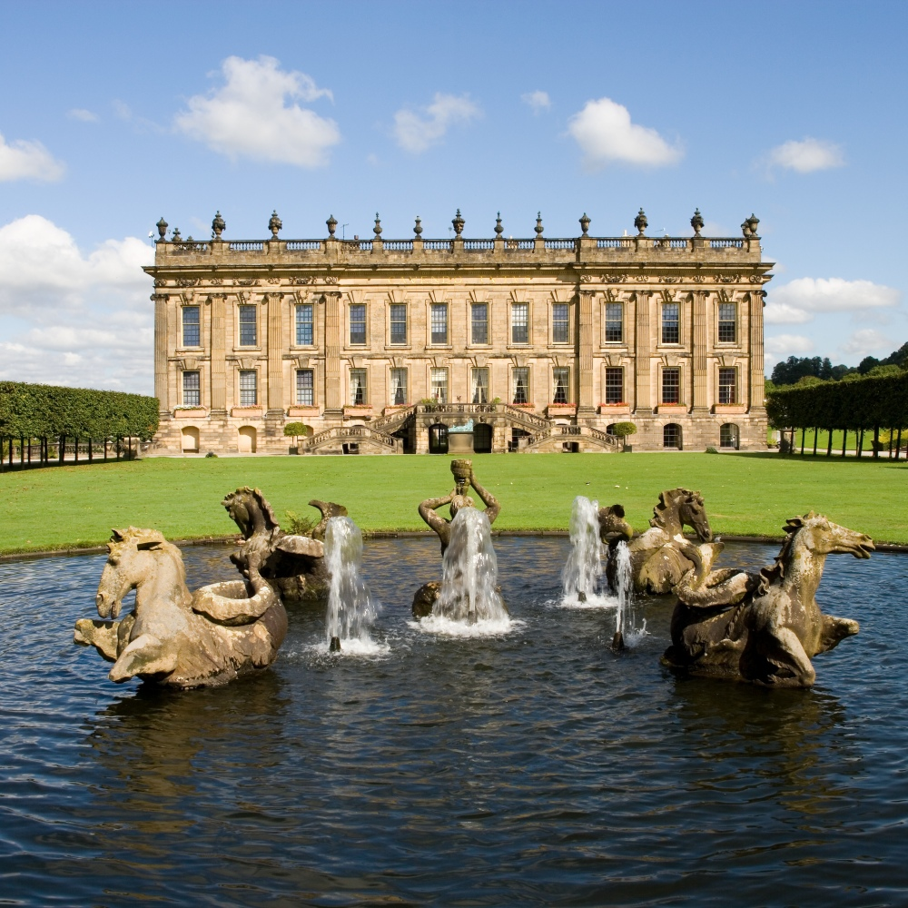

1
You find yourself at Bakewell where it is believed that Austen wrote Pride and Prejudice. Elizabeth Bennet and the Gardiners find themselves here on their holiday.
2

Take a walk around Chatsworth estate and imagine yourself at Pemberley. In the house you may recognise the grand staircase and celling where Lizzie and the Gardiners start their tour of Pemberley
3
Visit Haddon Hall, a wonderful medieval castle, and picture yourself in Elizabeth's room at the Inn at Lampton.
4
On Lizzie and the Gardiners' holiday they visit Matlock, a beautiful town know for its 'Matlock Bath'.
5
Next stop, still following the steps of their holiday, Dove Dale is a beautiful dale in Derbyshire.
6
Finally, enjoy rambling around the stunning Peak District, home to the Bennet family. Austen was inspired by the landscape and it's buildings and it is the setting for many films based on this classic.